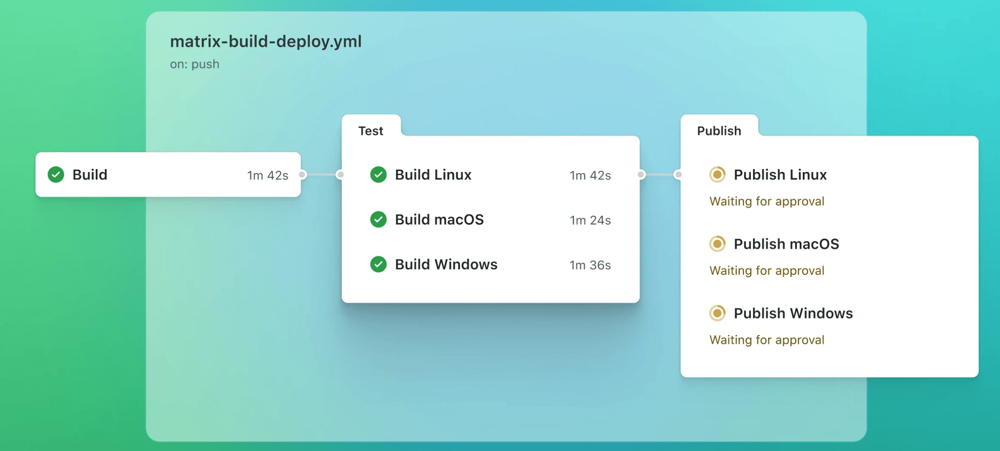

GitHub Actions 是 GitHub 内置的自动化平台，允许你在代码仓库中直接定义并运行自动化流程，无需借助任何外部 CI/CD 工具。
常见的用途包括：代码推送后自动运行测试、合并 PR 后自动部署到服务器、定时执行数据抓取脚本等。

GitHub Actions 对公开仓库完全免费，私有仓库每月有 2,000 分钟的免费额度。
核心概念
在开始编写配置文件之前，需要先理解以下几个核心概念，它们之间的关系如下：
仓库（Repository）
└── Workflow（工作流） ← 一个 .yml 文件 = 一个 Workflow
├── Event（触发事件） ← 什么情况下启动这个 Workflow，如 push、PR
└── Job（作业）× N ← 一个 Workflow 可以包含多个并行或串行的 Job
├── Runner（运行器） ← 执行 Job 的服务器，如 ubuntu-latest
└── Step（步骤）× N ← Job 内按顺序执行的一系列操作
├── Action ← 可复用的封装好的操作，如 actions/checkout
└── Run ← 直接执行 Shell 命令
| 概念 |
说明 |
类比 |
| Workflow（工作流） |
整个自动化流程，由一个 .yml 文件定义，存放在 .github/workflows/ 目录下 |
一份完整的工作计划书 |
| Event（事件） |
触发 Workflow 运行的条件，如代码推送、创建 PR、定时任务等 |
计划书的启动条件 |
| Job（作业） |
Workflow 中的一个独立任务单元，每个 Job 运行在独立的虚拟机上，多个 Job 默认并行执行 |
计划书中的一个章节 |
| Step（步骤） |
Job 内按顺序执行的最小操作单元，可以是一条 Shell 命令，也可以是一个 Action |
章节中的每一个具体步骤 |
| Action（动作） |
可复用的封装好的操作，来自 GitHub 官方、第三方或自己编写，通过 uses 引用 |
现成的工具模板 |
| Runner（运行器） |
执行 Job 的服务器，GitHub 提供 Ubuntu、Windows、macOS 三种托管环境 |
执行计划的工作人员 |
创建第一个 Workflow
1、目录结构
所有 Workflow 文件必须存放在仓库根目录的 .github/workflows/ 文件夹下，文件名以 .yml 或 .yaml 结尾，文件名可以自定义：
your-repo/
├── .github/
│ └── workflows/
│ ├── ci.yml ← 持续集成流程（如运行测试）
│ ├── deploy.yml ← 部署流程
│ └── scheduled.yml ← 定时任务
├── src/
├── package.json
└── README.md
一个仓库可以有多个 Workflow 文件，它们相互独立，分别由各自定义的事件触发。
2、最简单的 Workflow
下面是一个最基础的示例：每次向仓库推送代码时，打印一行"Hello, GitHub Actions！"：
实例
# .github/workflows/hello.yml
name: Hello World
# Workflow 的名称，显示在 GitHub Actions 页面上
on: push
# 触发条件：任意分支有代码推送时触发
jobs: # 定义所有 Job
say-hello: # Job 的 ID（自定义名称，同一 Workflow 内唯一）
name: 打印问候语
# Job 的显示名称（可选，不填则显示 Job ID）
runs-on: ubuntu-latest
# 指定运行环境：使用 GitHub 提供的最新版 Ubuntu 虚拟机
steps: # 该 Job 下的所有步骤，按顺序执行
- name: 打印消息
# Step 的名称（可选，用于在日志中标识该步骤）
run: echo
"Hello, GitHub Actions！" # run：直接执行 Shell 命令
YAML 文件对缩进非常敏感，必须使用空格缩进，不能使用 Tab 键。建议使用 VS Code 并安装 YAML 插件，可以实时检测格式错误。
触发事件（on）
on 字段定义哪些事件会触发这个 Workflow。可以是单个事件，也可以是多个事件的组合。
1、常用触发事件
| 事件 |
触发时机 |
常见用途 |
push |
有代码被推送到仓库时 |
运行测试、代码检查 |
pull_request |
创建或更新 Pull Request 时 |
PR 合并前的自动审查、测试 |
schedule |
按 Cron 表达式定时触发 |
定时备份、定时数据抓取 |
workflow_dispatch |
在 GitHub 网页上手动触发 |
按需部署、手动执行脚本 |
release |
发布新版本（创建 Release）时 |
自动打包、发布到生产环境 |
workflow_call |
被其他 Workflow 调用时 |
复用公共流程（如公共测试流程） |
2、指定分支或路径过滤
实例
span style="color: #007F45;">
on:
push:
branches:
- main
# 只在推送到 main 分支时触发
- develop
# 或者推送到 develop 分支时触发
- 'release/**'
# 或者推送到任何 release/ 开头的分支时触发（** 匹配任意字符）
paths:
- 'src/**'
# 进一步过滤：只有 src/ 目录下的文件发生变化时才触发
- 'package.json'
# 或者 package.json 文件发生变化时触发
# 两者是"或"的关系，满足任意一个即触发
pull_request:
branches:
- main
# 只在目标分支为 main 的 PR 上触发（即要合并进 main 的 PR）
types:
- opened
# PR 被创建时
- synchronize
# PR 有新的提交推入时
- reopened
# PR 被重新打开时
3、定时触发（schedule）
使用标准的 Cron 表达式定义执行时间，时区为 UTC（北京时间 = UTC+8，需换算）：
实例
span style="color: #007F45;">
on:
schedule:
# Cron 格式：分 时 日 月 星期
- cron: '
0 2 * * *'
# 每天 UTC 02:00（即北京时间 10:00）执行一次
- cron: '
0 9 * *
1'
# 每周一 UTC 09:00（即北京时间 17:00）执行一次
- cron: '*/
30 * * * *'
# 每 30 分钟执行一次
# 常用 Cron 表达式速查：
# '0 0 * * *' 每天午夜（UTC 00:00）
# '0 * * * *' 每小时整点
# '0 0 * * 0' 每周日午夜
# '0 0 1 * *' 每月 1 号午夜
4、手动触发（workflow_dispatch）
workflow_dispatch 允许在 GitHub 网页的 Actions 标签页中手动点击按钮启动 Workflow，还可以定义输入参数：
实例
span style="color: #007F45;">
on:
workflow_dispatch:
inputs:
environment: # 输入参数的名称（可在 steps 中通过 ${{ inputs.environment }} 引用）
description: '部署目标环境'
# 参数的描述，显示在手动触发的表单中
required: true
# 是否为必填项
default: 'staging'
# 默认值
type: choice
# 参数类型：choice（下拉选择）
options:
- staging
# 可选值
- production
run_tests:
description: '是否运行测试'
required: false
type: boolean
# 参数类型：boolean（勾选框）
default: true
jobs:
deploy:
runs-on: ubuntu-latest
steps:
- name: 显示部署参数
run: |
echo "目标环境：${{ inputs.environment }}"
echo "运行测试：${{ inputs.run_tests }}"
Jobs 与 Steps 详解
1、Job 的基本结构
实例
span style="color: #007F45;">
jobs:
build: # Job ID，同一 Workflow 中必须唯一
name: 构建项目
# Job 的显示名称（可选）
runs-on: ubuntu-latest
# 运行环境（必填）
# 可选：为整个 Job 设置环境变量，Job 内所有 Step 都可以访问
env:
NODE_ENV: production
APP_PORT: 8080
# 可选：设置超时时间（分钟），超时后 Job 自动取消，防止卡死
timeout-minutes: 30
steps:
# Step 写法一：使用 Action（用 uses 引用）
- name: 拉取代码
uses: actions/checkout@v4
# 引用官方 checkout Action（@v4 表示使用 v4 版本）
# Step 写法二：执行 Shell 命令（用 run 指定）
- name: 输出 Node 版本
run: node --version
# Step 写法三：执行多行 Shell 命令（用 | 表示多行）
- name: 安装依赖并构建
run: |
npm install
npm run build
echo "构建完成"
2、运行环境（runs-on）
GitHub 提供以下免费的托管运行器，可以按需选择：
| 标签 |
操作系统 |
说明 |
ubuntu-latest |
Ubuntu（最新 LTS） |
最常用，速度快，免费额度最多，推荐优先使用 |
ubuntu-22.04 |
Ubuntu 22.04 |
指定固定版本，避免因 latest 升级引入不兼容问题 |
windows-latest |
Windows Server（最新） |
用于需要 Windows 环境的测试或构建 |
macos-latest |
macOS（最新） |
用于 iOS/macOS 应用构建，消耗免费额度最快（约 Ubuntu 的 10 倍） |
3、Job 之间的依赖（needs）
默认情况下，多个 Job 并行运行。使用 needs 可以设置 Job 的执行顺序，形成串行依赖关系：
实例
span style="color: #007F45;">
jobs:
test: # 第一步：运行测试
runs-on: ubuntu-latest
steps:
- uses: actions/checkout@v4
- run: npm test
build: # 第二步：构建项目
runs-on: ubuntu-latest
needs: test
# 必须等 test Job 成功完成后，build 才会开始
steps:
- uses: actions/checkout@v4
- run: npm run build
deploy: # 第三步：部署
runs-on: ubuntu-latest
needs: [test, build
] # 必须等 test 和 build 都成功完成后，deploy 才开始
steps:
- run: echo
"开始部署..."
# 执行顺序：test → build → deploy（串行）
# 如果去掉 needs，则三个 Job 会同时并行执行
4、条件执行（if）
通过 if 可以控制 Job 或 Step 是否执行，常用于区分分支、判断上一步是否成功等：
实例
span style="color: #007F45;">
jobs:
deploy:
runs-on: ubuntu-latest
# if 写在 Job 级别：整个 Job 只在推送到 main 分支时才运行
if: github.ref == 'refs/heads/main'
steps:
- uses: actions/checkout@v4
- name: 部署到生产环境
run: ./deploy.sh
# if 也可以写在 Step 级别，控制某个具体步骤是否执行
- name: 发送成功通知
if: success
() # success()：上面所有 Step 都成功时才执行
run: echo
"部署成功，发送通知"
- name: 发送失败通知
if: failure
() # failure()：任意 Step 失败时才执行
run: echo
"部署失败，发送告警"
- name: 总是执行的清理步骤
if: always
() # always()：无论成功还是失败，都执行（常用于清理临时文件）
run: rm -rf ./tmp
环境变量与 Secrets
1、环境变量（env）
环境变量可以在 Workflow 的三个层级定义，作用范围依次缩小：
实例
# 层级一：Workflow 级别（所有 Job 和 Step 都可以访问）
env:
APP_NAME: my-app
NODE_VERSION: '
18'
jobs:
build:
runs-on: ubuntu-latest
# 层级二：Job 级别（只有当前 Job 内的所有 Step 可以访问）
env:
BUILD_MODE: production
steps:
- name: 显示环境变量
# 层级三：Step 级别（只有当前 Step 可以访问）
env:
STEP_VAR: hello
run: |
echo "应用名称：$APP_NAME" # 访问 Workflow 级别变量
echo "构建模式：$BUILD_MODE" # 访问 Job 级别变量
echo "步骤变量：$STEP_VAR" # 访问 Step 级别变量
echo "Node 版本：$NODE_VERSION"
2、GitHub 内置变量（github 上下文）
GitHub Actions 提供了一组内置的上下文变量，可以在任意位置通过 ${{ }} 语法引用：
实例
span style="color: #007F45;">
steps:
- name: 打印常用内置变量
run: |
echo "仓库名称：${{ github.repository }}" # 如：your-user/your-repo
echo "触发事件：${{ github.event_name }}" # 如：push、pull_request
echo "当前分支：${{ github.ref_name }}" # 如：main、develop
echo "提交 SHA：${{ github.sha }}" # 当前提交的完整 SHA 哈希值
echo "提交者：${{ github.actor }}" # 触发此次 Workflow 的用户名
echo "工作目录：${{ github.workspace }}" # 代码检出后所在的目录路径
echo "运行 ID：${{ github.run_id }}" # 本次 Workflow 运行的唯一 ID
echo "运行编号：${{ github.run_number }}" # 本次运行是该 Workflow 的第几次执行
3、Secrets（敏感信息管理）
密码、API 密钥、服务器地址等敏感信息不能直接写在 yml 文件中（因为代码是公开的），必须存储在 GitHub 仓库的 Secrets 中。
设置步骤：进入仓库页面 → Settings → Secrets and variables → Actions → 点击 New repository secret，填写名称和值后保存。
实例
span style="color: #007F45;">
steps
:
# 在 Step 中通过 ${{ secrets.密钥名称 }} 引用已设置的 Secret
# Secret 的值在日志中会自动被 *** 遮盖，不会泄露
- name: 部署到服务器
env:
SSH_KEY: $
{{ secrets.SSH_PRIVATE_KEY
}} # 服务器 SSH 私钥
SERVER_IP: $
{{ secrets.DEPLOY_SERVER_IP
}} # 服务器 IP 地址
run: |
echo "$SSH_KEY" > ~/.ssh/id_rsa
chmod 600 ~/.ssh/id_rsa
ssh user@$SERVER_IP "cd /app && git pull && pm2 restart all"
# GitHub 自动提供 GITHUB_TOKEN，用于操作本仓库（如推送代码、创建 Release）
# 无需手动创建，直接使用即可
- name: 推送变更到仓库
run: |
git config user.name "github-actions[bot]"
git config user.email "github-actions[bot]@users.noreply.github.com"
git add .
git commit -m "自动更新 [skip ci]"
git push
env:
GITHUB_TOKEN: $
{{ secrets.GITHUB_TOKEN
}} # GitHub 自动提供，无需手动创建
常用 Actions 介绍
GitHub 官方及社区提供了大量开箱即用的 Action，通过 uses: action名称@版本 引用，可以避免重复编写常见操作。
1、actions/checkout（拉取代码）
几乎所有 Workflow 的第一步都是拉取仓库代码，使用官方的 actions/checkout：
实例
span style="color: #007F45;">
steps
:
# 最基础的用法：拉取当前分支的最新代码到工作目录
- uses: actions/checkout@v4
# 高级用法：通过 with 传入参数进行定制
- uses: actions/checkout@v4
with:
ref: develop
# 拉取指定分支（默认拉取触发事件所在的分支）
fetch-depth: 0 # 拉取完整的 git 历史记录（默认只拉取最新一次提交）
# 设为 0 可以获取所有历史，git log 等命令才能正常使用
submodules: true
# 同时初始化并更新 git 子模块（submodule）
2、actions/setup-node（配置 Node.js 环境）
实例
span style="color: #007F45;">
steps:
- uses: actions/checkout@v4
- name: 配置 Node.js 环境
uses: actions/setup-node@v4
with:
node-version: '
20'
# 指定 Node.js 版本
# 配置完成后，npm 和 node 命令即可直接使用
- run: node --version
- run: npm install
- run: npm test
3、actions/setup-python（配置 Python 环境）
实例
span style="color: #007F45;">
steps:
- uses: actions/checkout@v4
- name: 配置 Python 环境
uses: actions/setup-python@v5
with:
python-version: '
3.11'
# 指定 Python 版本
- name: 安装依赖
run: pip install -r requirements.txt
- name: 运行测试
run: pytest tests/
4、actions/cache（缓存依赖加速构建）
每次 Workflow 运行时都重新下载依赖会很慢。使用 cache Action 可以将依赖缓存起来，下次运行时直接使用缓存，大幅缩短构建时间：
实例
span style="color: #007F45;">
steps:
- uses: actions/checkout@v4
- uses: actions/setup-node@v4
with:
node-version: '
20'
- name: 缓存 node_modules
uses: actions/cache@v4
with:
path: ~/.npm
# 指定要缓存的目录
key: $
{{ runner.os
}}-node-$
{{ hashFiles
('**/package-lock.json'
) }}
# key：缓存的唯一标识符
# hashFiles('**/package-lock.json')：根据 lock 文件内容生成哈希值
# lock 文件不变则 key 不变，直接命中缓存；lock 文件有变化则重新安装依赖
restore-keys: |
${{ runner.os }}-node-
# restore-keys：当 key 未命中时的降级匹配策略，使用最近一次有效缓存
- run: npm ci
# npm ci 比 npm install 更适合 CI 场景，更快更严格
- run: npm test
5、actions/upload-artifact / download-artifact（Job 间传递文件）
不同 Job 运行在独立的虚拟机上，文件不能直接共享。通过 artifact（产物）可以将一个 Job 的输出文件传递给另一个 Job：
实例
span style="color: #007F45;">
jobs:
build:
runs-on: ubuntu-latest
steps:
- uses: actions/checkout@v4
- run: npm install && npm run build
# 构建产物会输出到 ./dist 目录
- name: 上传构建产物
uses: actions/upload-artifact@v4
with:
name: dist-files
# 产物的名称（下载时通过此名称引用）
path: ./dist
# 要上传的目录或文件路径
retention-days: 7 # 产物保留天数（最长 90 天）
deploy:
runs-on: ubuntu-latest
needs: build
# 等 build Job 完成后再执行
steps:
- name: 下载构建产物
uses: actions/download-artifact@v4
with:
name: dist-files
# 与上传时的名称一致
path: ./dist
# 下载到本地的目录
- name: 部署文件
run: rsync -avz ./dist/ user@server:/var/www/html/
矩阵构建（Matrix）
矩阵构建允许你用一份 Job 配置同时在多个环境下并行运行，常用于跨版本、跨操作系统的兼容性测试：
实例
span style="color: #007F45;">
jobs:
test:
name: 测试 Node $
{{ matrix.node-version
}} on $
{{ matrix.os
}}
runs-on: $
{{ matrix.os
}} # 从矩阵变量中读取运行环境
strategy:
matrix:
os: [ubuntu-latest, windows-latest, macos-latest
] # 3 个操作系统
node-version: ['
18', '
20', '
22'
] # 3 个 Node 版本
# 以上组合共产生 3 × 3 = 9 个并行 Job
fail-fast: false
# 默认 true：一个 Job 失败后取消其余所有 Job
# 设为 false：即使某个组合失败，其他组合继续运行，
# 方便看到所有环境的测试结果
steps:
- uses: actions/checkout@v4
- name: 配置 Node.js $
{{ matrix.node-version
}}
uses: actions/setup-node@v4
with:
node-version: $
{{ matrix.node-version
}} # 引用矩阵变量
- run: npm ci
- run: npm test
实例
# 高级用法：通过 exclude 排除某些不需要的组合，通过 include 追加特殊配置
strategy:
matrix:
os: [ubuntu-latest, windows-latest
]
node-version: ['
18', '
20'
]
exclude:
- os: windows-latest
node-version: '
18'
# 排除 windows + Node 18 这个组合
include:
- os: ubuntu-latest
node-version: '
20'
experimental: true
# 为特定组合追加额外的变量（可在 steps 中用 matrix.experimental 引用）
实战示例
示例一：Node.js 项目 CI（自动测试）
每次推送代码或创建 PR 时，自动安装依赖、运行代码检查和测试：
实例
# .github/workflows/ci.yml
name: Node.js CI
on:
push:
branches: [main, develop
]
pull_request:
branches: [main
]
jobs:
test:
name: 代码检查与测试
runs-on: ubuntu-latest
steps:
- name: 拉取代码
uses: actions/checkout@v4
- name: 配置 Node.js 环境
uses: actions/setup-node@v4
with:
node-version: '
20'
cache: 'npm'
# setup-node 内置了缓存支持，比单独用 cache Action 更简洁
- name: 安装依赖
run: npm ci
# npm ci 会严格按照 package-lock.json 安装，
# 比 npm install 更适合 CI 场景
- name: 运行代码检查（ESLint）
run: npm run lint
- name: 运行单元测试
run: npm test -- --coverage
# 同时生成测试覆盖率报告
- name: 上传覆盖率报告
uses: actions/upload-artifact@v4
if: always
() # 无论测试是否通过，都上传报告（方便查看失败原因）
with:
name: coverage-report
path: ./coverage
示例二：Python 项目 CI
实例
# .github/workflows/python-ci.yml
name: Python CI
on:
push:
branches: [main
]
pull_request:
jobs:
test:
runs-on: ubuntu-latest
steps:
- uses: actions/checkout@v4
- name: 配置 Python 环境
uses: actions/setup-python@v5
with:
python-version: '
3.11'
cache: 'pip'
# 缓存 pip 依赖
- name: 安装依赖
run: |
python -m pip install --upgrade pip
pip install -r requirements.txt
pip install flake8 pytest # 安装代码检查和测试工具
- name: 运行代码格式检查（flake8）
run: |
# 检查语法错误和未定义变量（E9, F63, F7, F82 系列），发现问题直接报错退出
flake8 . --count --select=E9,F63,F7,F82 --show-source --statistics
# 检查代码风格（最大行长度 120），只统计问题数量，不报错退出
flake8 . --count --max-line-length=120 --statistics
- name: 运行测试
run: pytest tests/ -v
# -v 输出详细测试结果
示例三：构建并推送 Docker 镜像
实例
# .github/workflows/docker.yml
name: 构建并推送 Docker 镜像
on:
push:
branches: [main
]
tags:
- 'v*'
# 推送 v 开头的 tag 时触发，如 v1.0.0
jobs:
docker:
runs-on: ubuntu-latest
steps:
- uses: actions/checkout@v4
# 使用官方 Docker 元数据 Action 自动生成镜像标签
# 如推送 tag v1.2.3 时，自动生成 1.2.3、1.2、1、latest 等多个标签
- name: 提取 Docker 元数据（镜像标签等）
id: meta
# 为此 Step 设置 ID，供后续 Step 引用其输出
uses: docker/metadata-action@v5
with:
images: your-dockerhub-username/your-image-name
- name: 登录 Docker Hub
uses: docker/login-action@v3
with:
username: $
{{ secrets.DOCKERHUB_USERNAME
}}
password: $
{{ secrets.DOCKERHUB_TOKEN
}} # 使用 Access Token 而非密码，更安全
- name: 构建并推送镜像
uses: docker/build-push-action@v5
with:
context: .
# Dockerfile 所在目录（当前目录）
push: true
# true：构建完成后推送到 Registry
tags: $
{{ steps.meta.outputs.tags
}} # 引用 meta Step 生成的标签列表
labels: $
{{ steps.meta.outputs.labels
}} # 引用 meta Step 生成的标签信息
示例四：构建后自动部署到服务器
实例
# .github/workflows/deploy.yml
name: 构建并部署
on:
push:
branches: [main
] # 只有推送到 main 分支才触发部署
jobs:
build-and-deploy:
runs-on: ubuntu-latest
steps:
- uses: actions/checkout@v4
- uses: actions/setup-node@v4
with:
node-version: '
20'
cache: 'npm'
- name: 安装依赖并构建
run: |
npm ci
npm run build # 构建产物输出到 ./dist 目录
- name: 通过 SSH 部署到服务器
uses: appleboy/ssh-action@v1.0.3
# 第三方 SSH Action，无需手动配置 SSH
with:
host: $
{{ secrets.SERVER_HOST
}} # 服务器 IP 或域名
username: $
{{ secrets.SERVER_USER
}} # SSH 登录用户名
key: $
{{ secrets.SSH_PRIVATE_KEY
}} # SSH 私钥内容（对应服务器上的公钥）
port: 22 # SSH 端口，默认 22
script: |
# 以下命令在远程服务器上执行
cd /var/www/my-app
git pull origin main
npm ci --production
pm2 restart my-app # 用 pm2 重启 Node.js 应用
echo "部署完成：$(date)"
示例五：定时任务（自动备份数据库）
实例
# .github/workflows/backup.yml
name: 定时备份数据库
on:
schedule:
- cron: '
0 2 * * *'
# 每天 UTC 02:00（北京时间 10:00）执行
workflow_dispatch: # 同时支持手动触发，方便临时备份
jobs:
backup:
runs-on: ubuntu-latest
steps:
- name: 通过 SSH 执行备份脚本
uses: appleboy/ssh-action@v1.0.3
with:
host: $
{{ secrets.SERVER_HOST
}}
username: $
{{ secrets.SERVER_USER
}}
key: $
{{ secrets.SSH_PRIVATE_KEY
}}
script: |
TIMESTAMP=$(date +%Y%m%d_%H%M%S)
BACKUP_FILE="/backup/db_$TIMESTAMP.sql"
# 执行数据库备份
mysqldump -u root -p${{ secrets.DB_PASSWORD }} my_database > $BACKUP_FILE
# 压缩备份文件
gzip $BACKUP_FILE
# 删除 30 天前的旧备份文件，避免磁盘占满
find /backup -name "*.sql.gz" -mtime +30 -delete
echo "备份完成：${BACKUP_FILE}.gz"
调试技巧
1、开启 Debug 日志
当 Workflow 运行失败但日志信息不够时，可以开启详细调试模式。方法：进入仓库 Settings → Secrets and variables → Actions，添加以下两个 Secret（值均设为 true）：
ACTIONS_RUNNER_DEBUG：开启运行器详细日志ACTIONS_STEP_DEBUG：开启每个 Step 的详细调试日志
2、打印上下文信息辅助排查
实例
span style="color: #007F45;">
steps:
- name: 打印所有上下文信息（调试用，排查问题时加入，解决后删除）
run: |
echo "=== github 上下文 ==="
echo '${{ toJson(github) }}' # toJson() 将对象格式化为 JSON 字符串输出
echo "=== env 上下文 ==="
echo '${{ toJson(env) }}'
echo "=== job 上下文 ==="
echo '${{ toJson(job) }}'
3、本地测试 Workflow（使用 act）
每次推送代码才能测试 Workflow 效率很低。act 是一个开源工具，可以在本地模拟运行 GitHub Actions，大幅提升调试效率：
# 安装 act（需要本地已安装 Docker）
# macOS
brew install act
# Linux
curl https://raw.githubusercontent.com/nektos/act/master/install.sh | sudo bash
# 在仓库根目录运行所有 Workflow
act
# 只运行指定事件触发的 Workflow
act push
# 只运行指定的 Job
act -j build
本地测试时，act 会使用 Docker 容器模拟 GitHub 运行环境，但部分 Action（如 actions/cache）在本地模拟时效果可能与真实环境有差异，最终结果以 GitHub 上实际运行为准。
常见问题与注意事项
1、权限问题（Permission denied）
如果 Workflow 需要向仓库推送代码或操作 Issues，需要在配置文件中显式声明权限：
实例
# 在 Workflow 顶层或 Job 级别设置权限
permissions:
contents: write
# 允许读写仓库内容（代码、文件）
issues: write
# 允许创建和修改 Issues
pull-requests: write
# 允许操作 Pull Requests
# 最小权限原则：只开放实际需要的权限，其余默认为 read 或 none
2、避免 Workflow 循环触发
如果 Workflow 会自动向仓库推送代码，可能触发新的 push 事件，导致无限循环。解决方法：在自动提交的 commit message 中加入 [skip ci] 关键字，GitHub 会跳过该次提交的 Workflow 触发：
git commit -m "自动格式化代码 [skip ci]"
3、YAML 特殊字符转义
在 run 字段的 Shell 命令中使用 ${{ }} 表达式时，如果表达式包含冒号（:）等 YAML 特殊字符，需要用引号包裹整个值，或改为先赋值给环境变量再使用：
实例
span style="color: #007F45;">
steps
:
# 不推荐：${{ }} 表达式直接嵌入复杂命令，可能引发 YAML 解析错误
- run: echo $
{{ github.event.pull_request.title
}}
# 推荐：先将值赋给环境变量，再在 Shell 中使用环境变量
- name: 打印 PR 标题
env:
PR_TITLE: $
{{ github.event.pull_request.title
}}
run: echo
"PR 标题：$PR_TITLE"
更多完整文档请参考官方文档：https://docs.github.com/zh/actions